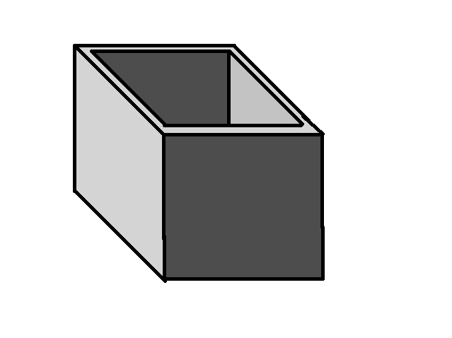
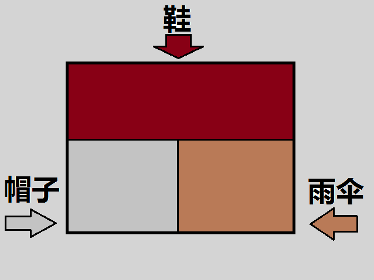
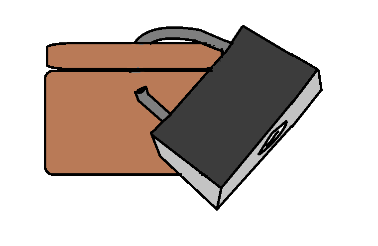
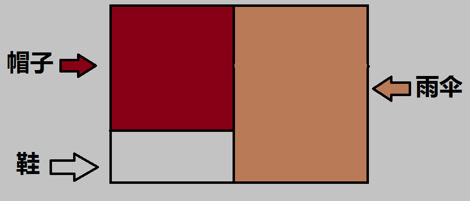

今天复习到数据库管理，突发奇想花了这么几幅图！描述一下我们管理数据库与管理我们的箱子！
第一步，买箱子，考虑放箱子放点什么？————对应数据库管理中“决定数据库中的信息内容和结构”

第二步：划分区域决定在某个区域放什么！—————对应数据库的“存储结构和存储策略”

第三：给你的箱子买把锁（防盗）————对应数据库的安全性要求和完整性约束

第四：时不时检查一下咱们的东西时不时还完整，有没有丢什么——监控数据库的使用和运行
第五步：如果有必要，重新安排一下空间让利用更合理——数据库的改进和重组！
